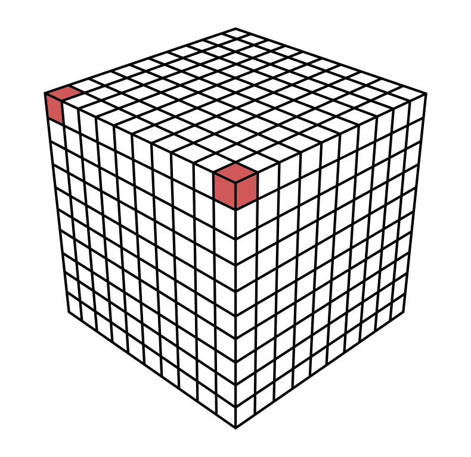
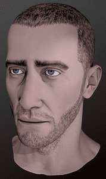
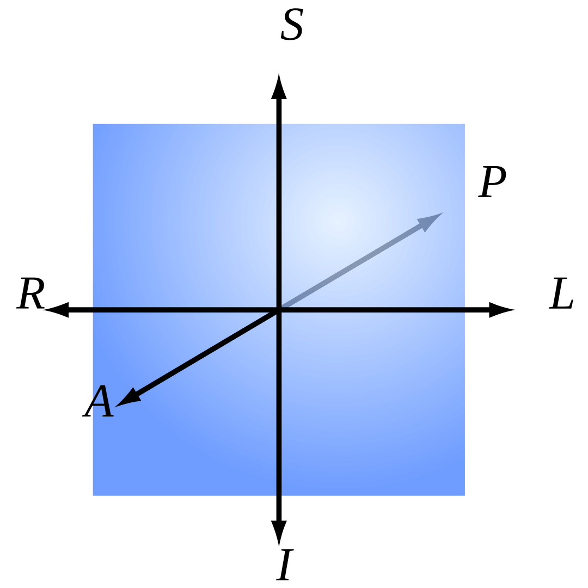
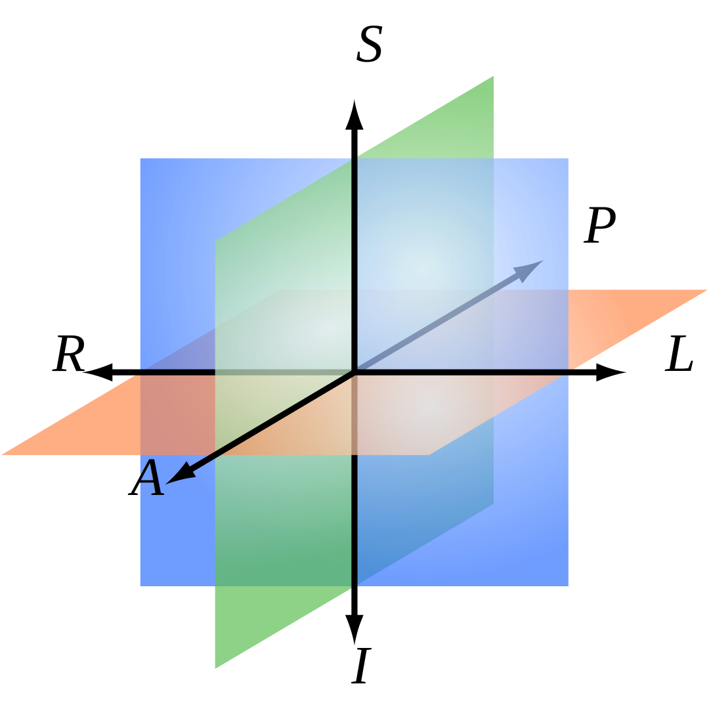
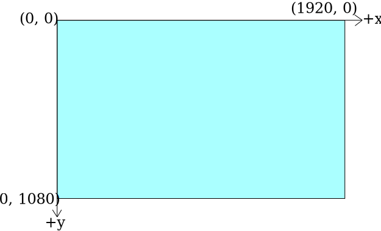
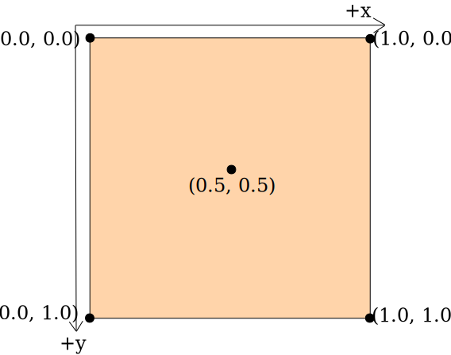

Introduction
Volume Data Suite (VDS) is a free and open source app that can be used to visualize and interact with volumetric image data.
View the web demo app online at https://online.volumedatasuite.com or download the latest native version for your plattform.
Status
VDS is currently nothing more than a proof of concept and in a very early pre-alpha state. There are many features I want to add, and the API and User Interface is still evolving. Expect breaking changes!
Supported Plattforms
Cross-Platform Support
Currently the following graphics APIs are supported:
- Windows (Vulkan and DirectX)
- macOS (Metal)
- Linux (Vulkan)
- Web (WebGPU)
Web Plattform restrictions:
WebGL is currrently not supported due to significant performance reductions. Make sure that you use the latest version of your web browser and check its WebGPU support, if you want to use the web based version of VDS. The latest versions of Chromium based browsers like Google Chrome, Microsoft Edge and Chromium itself should work.
Direct file system access is currently not possible with WebAssembly (WASM). Therefore files can only be opened via drag and drop or by downloading them from a URL and not all file types are supported. Files can only be exported as a download.
Gerneral Perfomance is better on native versions of VDS that run directly on the operating system and not inside a web browser. Main reason are missing SIMD like f16c on x86 or fp16 on arm64 which are not available in WASM.
About Volume Data
3D Images and Voxels
A voxel is like a three-dimensional pixel that represents a value on a regular grid in three-dimensional space. It is analogous to a pixel, which represents a value on a regular two-dimensional space, like a 2D image.
|  |
|---|
| 3D voxel grid with two highlighted voxel |
When dealing with 3D MRI or 3D CT images, a voxel value usually represents a itensity value (also known as ISO value).
Orientation and Voxel-Order Terminology
Basic Direction Terms
Directions are given relative to the patient or object. ("Right" is patient's or object's right.) When referring to a location on a screen, it is important to be precise. For instance, patient-right can be located on the left side of the screen. We use the following terms:
| Directions | Example |
|---|---|
| Right <-> Left | Patient's right ear <-> patient's left ear |
| Anterior <-> Posterior | Patient's nose <-> patient's back of the head |
| Inferior <-> Superior | Patient's jaw <-> patient's skullcap |
|  | |
|---|---|
| 3D Coordinate System | Head Reference |
The terms "up", "down", "front", "back" are not used because they have ambiguous meanings when dealing with patients in different orientations (e.g. lying down).
Axes for Spatial Coordinates
To describe locations in space around volume data, we need to agree on a specific set of axes. These axes are used to describe a point's coordinates. There are three axes that could be used in any order, and either direction could be positive. This gives us a total of 48 possible axis schemes.
It seems that three of these schemes are most popular:
| RAS ("Neurological" convention) +X = R +Y = A +Z = S | LAS ("Radiological" convention) +X = L +Y = A +Z = S | LSA ("Math" convention) +X = L +Y = S +Z = A | Head Reference |
Viewing Direction: The figures above are shown as viewed looking toward the patient’s face. However, there are also conventions for viewing, such as the neurological view, which is from above/behind the patient and shows patient left on screen left.
The RAS coordinate system is a right-hand coordinate system (thumb = R, 2nd finger = A, middle finger = S.). On the other hand, LAS is a left-hand coordinate system.
The L, A and S axes could provide a right-hand coordinate system if used in the order LSA for example. A right-hand coordinate system is customarily used when performing matrix and vector math and is more attractive for computer graphics developers and APIs. This is why VDS uses LSA internally. However, it seems like no one uses LSA when talking about volume data in a medical context. Therefore you can view volume data in various different coordinate systems (RAS, LAS, LSA).
Planes for Volume Slice Orientation
There are three commonly used slice planes:
- Axial (Transverse): R-L x A-P plane
- Coronal: R-L x S-I plane
- Sagittal: A-P x S-I plane
The viewing direction on each plane depends on the axis convention used, such as RAS, LAS, or LSA.
|  |  | |||
|---|---|---|---|---|
| Axial (Traverse) | Coronal | Sagittal | All Planes | Head Reference |
Volume Data Representation in VDS
VDS maps intensity values internally to a floating point range of 0.0 to 1.0 with a 16 bit presicion, where 0.0 represents the lowest possible intensity value and 1.0 represents the highest possible intensity value.
Great Resources
In case you are interested in more information about volume data, you may also be interested in reading the following articles:
- Orientation and Voxel-Order Terminology: RAS, LAS, LPI, RPI, XYZ and All That by Graham Wideman
- AFNI Documentation is a set of free and open source, which specalized on human brain MRI scans and is way more advanced than VDS. Its documentation goes way more in depth on various volume data information.
Importing Static Volume Data
Currenltly the following file formats can be imported:
File Format: RAW 3D
RAW 3D files are just plain 3D arrays of voxel value data. These files do not contain a header with metadata on how to read or interpret the data. While VDS has a well defined Volume Data Representation, there is no universal applicable standard for memory layout, number type, voxel order, endianess and so on when storing volume data. Therefore, you need to provide the nessesary metadata on how to read and interpret the data when importing a RAW 3D file.
Typical file extensions:
- *.raw
- *.RAW
Supported Number Types for Voxels
Each voxel value can be stored as a signed integer, an unsigned integer or as a floating point number. Each of these number types can be stored with various amounts of bits per number, which is known as "precision". A higher precision usually means more details in the image data at the cost of larger file sizes. The following number types are supported by VDS when importing a RAW 3D file:
| ID | Number Type | Precision |
|---|---|---|
| u8 | Unsigned Integer | 8 Bit |
| u16 | Unsigned Integer | 16 Bit |
| i8 | Signed Integer | 8 Bit |
| i16 | Signed Integer | 16 Bit |
| f16 | Floating Point Number | 16 Bit |
Internally, VDS always converts voxel values to f16 before beeing operated on.
Scaling
VDS supports uniform and non-uniform spacing with different scaling factors for each axis. Non-linear scaling is not supported.
Voxel Ordering
Some file formats like RAW 3D do not store metadata about the coordinate system. It could be possible, that for example the RAW 3D files content was stored in RAS but the VDS viewer is configured to use LAS.
Storage Orders desribe the voxel ordering.
Here is an example for the Storage Order for LAS which would be "R->L within P->A within I->S" and means:
- Voxels ordered from right to left to store a row
- Rows ordered from posterior to anterior to store a slice
- Slices stored from inferior to superior to store a volume
By selecting the correct Storage Order, the axis of the file data coordinate system will be mapped correctly to configured VDS viewing coordinate system.
VDS supportes the following voxel orderings for RAW 3D files:
| Axes for Spatial Coordinates | Storage order in file | Slice orientation (ambiguous) | Known as |
|---|---|---|---|
| LAS | R->L within P->A within I->S | "Axial" | Radiological |
| RAS | L->R within P->A within I->S | "Axial" | Neurological |
| LSA | R->L within I->S within P->A | "Saggital" | |
| LIA | R->L within S->I within P->A | "Coronal" |
If you select the wrong voxel order while importing a RAW 3D file, then you might see the volume rotated or mirrored along any of the spatial axes of the volume and not mapped correctly to the Axes for Spatial Coordinates.
Converting RAW 3D File Voxel Ordering to an In-Memory Array
Most RAW 3D files are stored as RAS:
- X increases from Left to Right
- Y increases from Posterior to Anterior
- Z increases from Inferior to Superior
A naive approach to actually read an RAW 3D file into memory in one big blob and treat it as an array would probably result in a wrong access pattern like: Voxels[ X ][ Y ][ Z ].
Popular programming languages like C/C++/Rust use the first index as the slowest-incrementing index into memory. The correct access pattern for this example would be Voxels[ Z ][ Y ][ X ].
Alignment to Axes for Spatial Coordinates
Sometimes the voxel data in RAW 3D files is not aligned to some exact orthogonal directions. Nonetheless, it's useful to know which set of axes the voxel indices correspond to most closely, as this helps when applying alignment or rotation steps.
Furthermore, the location of the origin is unkown. Even if we know the origin voxel, the location of the origin can be centered in the middle of this central voxel, or on the one of its eight corners.
VDS defaults the origin for RAW 3D files to the center of the volume 3D dimensions after the Scaling is applied.
Multiple volumes in a single file
Multiple volumes in a single file could be used for multiple time points. VDS does not support multiple volumes in a single file when importing a RAW 3D file.
Visualization
Currently the volume data can be visualized as:
- 2D Slices
Render Backend
VDS uses the wgpu graphics API to render all visualizations. Shaders are written in the WebGPU Shading Language also known as WGSL and can be translated to various native graphics APIs like Vulkan, DirectX or Metal. This is why VDS supports so many different plattforms listed on Supported Plattforms.
wgpu Coordinate System
Since all graphics pipelines are written with wgpu and WGSL, the underlying coordinate system is the one from WebGPU, which is identical to the coordinate system of DirectX and Metal.
Note: All custom shaders must be compliant with the WebGPU coordinate system, no matter which graphic API backend is used by the plattform. All coordinates will be transformed by wgpu to match the plattform graphics API coordinate system. So do not assume the coordinate system of for example Vulkan when VDS uses Vulkan as render backend.
Normalized device coordinate system
Normalized device coordinates use a left-handed coordinate system and map to positions in the viewport. These coordinates are independent of viewport size. The bottom-left corner is at (-1.0, -1.0, z). Positive-z values point away from the camera ("into the screen") and are clipped between 0.0 and 1.0.
| Normalized device coordinate system |
Framebuffer coordinate system
Framebuffer coordinates adress pixels in the framebuffer and have two dimensions (x, y). Those dimensions are not normalized, so each pixel extends 1 unit in x and y dimensions. The top-left corner is at (0, 0).
|  |
|---|
| Framebuffer coordinate system |
2D Texture Coordinates
2D textures us a normalized coordinate system. The origin of a 2D texture is a the top-left corner with +Y facing down. Sometimes uv coordinates are used to describe a texture coordinate, where (u, v) is equal to (x, y).
|  |
|---|
| 2D texture coordinates |
3D Texture Coordinates
3D textures us a normalized coordinate system. The origin of a 3D texture is a the top-left-front corner with +Y facing down and +Z facing back, similiar to DirectX 11. Sometimes uvw coordinates are used to describe a texture coordinate, where (u, v, w) is equal to (x, y, z).
Differnces to other APIs like OpenGL and Vulkan
Other graphics APIs like OpenGL and Vulkan use different coordinate systems. This section aims to highlight the differences between those coordinate systems to mitigate misunderstandings.
WebGPU & DirectX & Metal
NDC: +Y is up. Point (-1, -1) is at the bottom left corner.
Framebuffer coordinates: +Y is down. Origin (0, 0) is at the top left corner.
2D Texture coordinates: +Y is down. Origin (0, 0) is at the top left corner.
OpenGL & OpenGL ES & WebGL
NDC: +Y is up. Point (-1, -1) is at the bottom left corner.
Framebuffer coordinates: +Y is up. Origin (0, 0) is at the bottom left corner.
2D Texture coordinates: +Y is up. Origin (0, 0) is at the bottom left corner.
Vulkan
NDC: +Y is down. Point (-1, -1) is at the top left corner.
Framebuffer coordinates: +Y is down. Origin (0, 0) is at the bottom left corner.
2D Texture coordinates: +Y is up. Origin (0, 0) is at the bottom left corner.
3D Volume Scaling
VDS only supports uniform and non-uniform volume data that is represented as a regular grid of voxels. This means, that each that the distance between all voxels must be identical on the same axis.
Not supported a irregular or non-linear distance between voxels along either axis.
During the import process, the bounding box of the volume data is normalized. This means, that aspect ratio of the volume is applied to the bounding box and afterwards the volume gets scaled in a way, that the longest side of the bounding box equals a length of 1.0.
Z-Values and Depth Buffer
Z-Values represent the distance of a pixel from the camera in projection coordinates. The near clipping plane is set to 0.1 and the far clipping plane is set to 10.0 which results in a in far-plane/near-plane ratio of 100. At a ratio of 100, 90 percent of the precision range is spent on the first 10 percent of the depth range (D3D Docs). This is suitable for all volume renderers of VDS, since the bounding box of the volume data is always normalized due to the 3D Volume Scaling.
The Depth Buffer contains depth values between 0.0 and 1.0, where 0.0 is the closest distance and 1.0 is the furthest distance. All Z-Values get mapped from the range of the near-plane - far-plane to the range of 0.0 - 1.0 respectively. VDS uses wgpu::TextureFormat::Depth32Float for the depth buffer.
Depth Buffer and Ray Marching
The depth of each pixel is set to first sample point the ray that exceeds the threshold value.
For non-translusent visualization methods like "First Hit" the depth value is set accordingly to the visible surface shown on the screen.
For translusent visualisation methods like "Accumulate" the depth value is set accordingly to the first visible layer shown on the screen, even if it extremely translucent and barly visible. This is due to the fact that depth values are assigned to a pixel, while the pixel color value is calculated by accumulating all the samples in the raymarching ray.
Development
VDS is written in Rust and shaders are written in WGSL.
Make sure you are using the latest version of stable rust by running rustup update. VDS requires a proper graphics driver that provides at least one of the supported graphics APIs.
Building from Source for Native
Run it locally with cargo run --release.
On Linux you need to first run:
sudo apt-get install libxcb-render0-dev libxcb-shape0-dev libxcb-xfixes0-dev libxkbcommon-dev libssl-dev
On Fedora Rawhide you need to run:
dnf install clang clang-devel clang-tools-extra libxkbcommon-devel pkg-config openssl-devel libxcb-devel gtk3-devel atk fontconfig-devel
Building from Source for Web
Trunk can be used to compile vds to WASM and spin up a web server with hot reloading.
- Install Trunk with
cargo install --locked trunk. - Run
trunk serveto build and serve onhttp://127.0.0.1:8080. Trunk will rebuild automatically if you edit the project. - Open
http://127.0.0.1:8080/index.html#devin a browser. See the warning below.
assets/sw.jsscript will try to cache our VDS app, and loads the cached version when it cannot connect to server allowing VDS to work offline (like PWA). Appending#devtoindex.htmlwill skip this caching, allowing to load the latest builds during development.
Deploy for Web
- Just run
trunk build --release. - It will generate a
distdirectory as a "static html" website - Upload the
distdirectory to any of the numerous free hosting websites including GitHub Pages. - This repo already provides a workflow that auto-deploys VDS to GitHub pages.